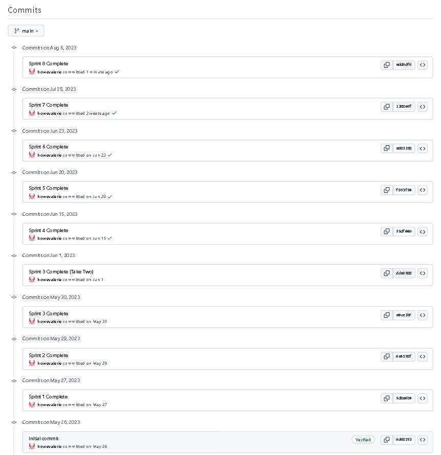
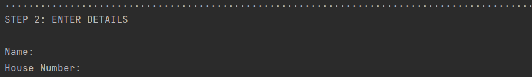

Overview
This python program is a computer program that allows a customer to order sandwiches for the 'Marsden Gourmet Sandwich Bar' It will be designed to allow customers to see the menu, make an order, review their orders, edit their orders, cancel their total order and proceed through a checkout. During the checkout process, the customer will have to select whether they want a pickup or delivery and enter their details appropriately. That is, customers who select pickup will only have to enter their name whereas customers who select a delivery will have to order their name, address, phone number. A delivery order will also incur a $3 delivery fee.
Factors Considered
There were numerous factors considered in the development of this program
- The Agile process of project development through sprints
- Decomposing the program into smaller constituent functions
- Regular and comprehensive testing
- The management of a project backlog for prioritisation of tasks
- Regular commits to GitHub following the completion of sprints
Project Management through GitHub
Throughout the development of this program, I used GitHub for version control. In doing so, I was able to apply the Agile project management technique throughout the project. The Agile methodology involves breaking the project into smaller parts (displayed on a project backlog), developing a program by completing these short passages of work (called sprints) which accomplish tasks in order of priority, and continually reviewing completed sprints. The code associated with each sprint was tested on a separate Python file before being implemented into the main program, where it was tested again. Depending on what I had uncovered during the testing stage, I was then able to tailor the aims of the next sprint. Following the completion of each sprint, the version of the code was committed to GitHub. This meant that each version of the code was easily accessible throughout the process through GitHub. Furthermore, all the Kanban sprint boards and the overall project backlog are stored on GitHub.
Pushing to GitHub
Overview of Commits on GitHub
Example of GitHub Push on Git Bash

Project Backlog
Throughout the process of developing this program, I had managed and referred back to a Project Backlog. The Project Backlog was set up as a Kanban board on GitHub and contained a list of tasks ordered by priority, with the tasks of highest priority at the top and those of lowest priority at the bottom. It was regularly updated (i.e. new items added, tasks reshuffled) throughout the project. The following image displays the status of my Project Backlog at the start.
Network Graph
The Network Graph displays a timeline for the commit history of the program.

Kanban Sprint Boards
Prior to the development of each sprint, I created a Kanban Sprint Board on GitHub outlining the overall plan for that sprint. This enabled me to effectively manage the development of each individual sprint.
Sprint One
Aim
In this sprint, I aim to create a basic program which can perform the following:
- Display the menu (names and prices of each sandwich)
- Allow the customer to quit the program
I also aim for it to contain an option menu for the two features, clear communication and a neat visual design. I would also like all inputs to be efficiently collected, especially in regard to case sensitivity
Program Plan

Testing Full Program

Reflection
At this stage, the program successfully displays an option menu for two functions: one for printing the sandwich menu and another for exiting the program. It efficiently collects string and integer inputs in a way that is not case-sensitive and displays simple, clear feedback when required (e.g. it notifies the customer of when they enter an invalid input). Furthermore, whenever the customer enters an invalid input, they are given the option to enter that input repeatedly until the input entered is valid. It stores information about the sandwiches efficiently in a 2D (Multidimensional) list and makes clear separation of sections with horizontal rules for ease of use.
However, there are still numerous areas for improvement. For example, the customer is unable to do anything else but view the menu and exit the program. Hence, my program could benefit from a greater number of features, the most important perhaps being for the customer to make sandwich orders (type and quantity) and to review their orders. I also realise that the current mechanism for printing the option menu is rather inefficient (printed as a single multi-line string), which makes it difficult to update. Hence, it may also be worthwhile to develop a more efficient method of printing the menu options (e.g. by creating a function which loops through a list).
Sprint Two
Aim
In this sprint, I aim to develop the sandwich ordering program so that it is capable of facilitating a greater range of features. In particular, I would like to integrate the following features
- An avenue for adding sandwiches to the 'cart'
- An avenue for reviewing all orders (sandwich type and quantity) in the 'cart'
- A more efficient method of printing the option menu (preferably another 2D list)
Program Plan
Placing an Order

Reviewing Order

Reflection
At this stage, the program successfully facilitates four basic features:
- Printing the Menu
- Placing an Order
- Reviewing All Orders
- Exiting the Program
Additionally, the mechanism for displaying the menu is significantly more efficient than in the previous version in that it is displayed by looping through a 2D list as opposed to printing a multi-line string.
However, there are still numerous areas where there is potential for improvement. For example, there is a potential for a customer to order an unrealistic quantity of sandwiches (eg. 100,000). To avoid this, it would be beneficial for the program to impose a limit for the quantity of sandwiches ordered. Furthermore, it would be beneficial to extending the review feature of the program into a comprehensive checkout process, especially since the order review does not display the individual price or a total charge and does not account for a delivery fee (when appropriate). Furthermore, it would be good to incorporate a confirmation of orders and clear headings throughout the process.
Sprint Three
Aim
In this sprint, I aim to extend the reviewing features of the program by improving/integrating the following:
- Getting the customer’s collection preference (i.e. pickup or delivery)
- Displaying a more detailed review of the orders (e.g. further including individual prices beside quantities, a total charge and a delivery fee if appropriate)
- A confirmation of orders before proceeding with the checkout process which involves collecting customer details according to collection preference (see table below for details)
- Clear headings throughout the process
Furthermore, I aim to set a limit of 5 sandwiches per type to prevent the customer from ordering unrealistic quantities of sandwiches (eg. 100,000).
| Collection Preference | Customer Details Collected |
|---|---|
| Delivery | Name, Address, Phone Number |
| Pickup | Name |
Program Plan

Maximum of Five per Order
Reviewing Order with Prices, Quantities and Total

Checkout Process for Pickup

Checkout Process for Delivery

The program is now able to facilitate a more sophisticated checkout process, involving collecting the customer’s collection preference (e.g. pickup or delivery), a comprehensive receipt (including individual prices, quantities, a total charge and a delivery fee if appropriate), the confirmation of orders, an avenue for exiting the checkout process and clear headings throughout (e.g. STEP 1: PICKUP OR DELIVERY?, STEP 2: ENTER DETAILS). It also imposes a limit of five sandwiches for each order type.
Through an extensive testing and reviewing process, I can identify numerous areas for improvement.
ERROR
The customer is able to make multiple orders for the same sandwich type. This is problematic and should be addressed promptly, perhaps by checking through the complete order list to see if that sandwich type had not already been ordered before allowing the customer to continue the ordering process.
ERROR
This error had come about after attempting to proceed to the checkout when the cart was empty. Through further testing, I found this error to come up also when the customer had attempted to review their orders when their cart was empty. This error resulted from the fact that the program was expecting a value from a list that did not exist. To resolve this, I could make use an if, else statement to ensure that the customer cannot access the order review and checkout feature without first making at least one order.

ERROR
There is the possibility that a customer enters an invalid phone number or enters inputs that are in varying formats (e.g. considering country code). Hence, it would be ideal to demand a certain format (i.e. with the country code) and then ensure that the customer enters the relevant number of digits (e.g. +64 _ _ _ _ _ _ _ _)
CONCERN
I noticed a risky line of code on line 69, which could perhaps be replaced by calling a function which loops through the relevant list and returns an indication of whether the item is or isn't in the list.
AREA FOR IMPROVEMENT
The program does not give the customer an opportunity to edit the orders in their cart (e.g. remove orders, change quantities) and exit any time during this process. Again, it would be pertinent to ensure that the customer cannot access this feature if they have not made any orders.
AREA FOR IMPROVEMENT
The program does not give the customer the opportunity to cancel their total order (with confirmation) and start a new order. Again, it would be pertinent to ensure that the customer cannot access this feature if they have not made any orders.
Sprint Four
Aim
In this sprint, I aim to extend my program by integrating the following:
- Ensure that the customer cannot access the reviewing orders and checkout feature without first making at least one order.
- Ensure that the customer enters their phone number in a valid format (i.e. +64 _ _ _ _ _ _ _ _)
- Ensure that the customer enters their address in a valid format
- Ensure that the customer is unable to make more than one order for the same sandwich type
- Change the risky line of code on line 69 to something more hardy (e.g. a loop)
- Provide an avenue for the customer to edit the orders in their cart (i.e. remove orders, change quantities) and exit any time during this process. It might also be worthwhile ensuring that the customer cannot access this feature if their cart is empty.
- Provide an avenue for the customer to cancel their total order (with confirmation) and start a new order. It might also be worthwhile ensuring that the customer cannot access this feature if their cart is empty.
Program Plan
 Testing Completed Developments
Testing Completed Developments
Cancelling Complete Order

Preventing Duplicate Orders for the Same Sandwich Type

Edit Order Quantity
Remove Sandwich Type Order

Preventing User from Reviewing Orders when No Orders have been Made

Preventing User from Cancelling Complete Order when No Orders have been Made

Preventing User from Editing Orders when No Orders have been Made

Preventing User from Proceeding to Checkout when No Orders have been Made

Ensure Valid Address and Phone Number

Reflection
At this stage, the program can successfully facilitate an ordering process that ensures that:
- The customer enters their phone number in a valid format (i.e. +64 _ _ _ _ _ _ _ _)
- The customer is unable to make more than one order for the same sandwich type (preventing duplicate orders)
- There is an avenue for the customer to edit the orders in their cart and cancel all their orders (with confirmation).
- The customer is unable to access the order review, order editing, cancelling total order and checkout features if their cart is empty.
However, through an extensive testing process, I had identified the following errors:
ERROR
The program crashed when nothing was entered for the quantity of sandwiches. This crash resulted from the fact that the mechanism of the get_integer() function is to accept any input and cast it as an integer, which was not possible to do for with an entry of nothing. To address this, I might adapt the get_integer functions so that it will not accept any entry (for the quantity) that is not an integer and would continue to ask for an entry until a valid input is provided.
![Sprint 4: [enter] into int input](assets/img/sprint_4/sprint_4_error_[enter]_into_int_input.png)
ERROR
The program crashed when a string was entered for the quantity of sandwiches. This crash resulted from the fact that the mechanism of the get_integer() function is to accept any input and cast it as an integer, which was not possible for a string. To address this, I might adapt the get_integer functions so that it will not accept any entry (for the quantity) that is not an integer and would continue to ask for an entry until a valid input is provided.
ERROR
The program crashed when a decimal value was entered for the quantity of sandwiches. This crash resulted from the fact that the mechanism of the get_integer() function is to accept any input and cast it as an integer, which was not possible for a float (i.e. a decimal). To address this, I might adapt the get_integer functions so that it will not accept any entry (for the quantity) that is not an integer and would continue to ask for an entry until a valid input is provided.
ERROR
The program crashed when symbols were entered for the quantity of sandwiches. This crash resulted from the fact that the mechanism of the get_integer() function is to accept any input and cast it as an integer, which was not possible for symbols. To address this, I might adapt the get_integer functions so that it will not accept any entry (for the quantity) that is not an integer and would continue to ask for an entry until a valid input is provided.

ERROR
The program accepted a negative value for the quantity of sandwiches. In context of sandwich ordering, this could be very problematic. To address this, I might adapt the get_integer() function so that it will not accept any entry (for the quantity) that is not an integer as opposed to just forcing any input provided to become an integer and would continue to ask for an entry until a valid input is provided.
ERROR
The program accepted a negative value for the quantity of sandwiches. In context of sandwich ordering, this could be very problematic. To address this, I might adapt the get_quantity() function so that it will only accept integer entries (for the quantity) that are greater than 0. This might be achieved by and if, else statement and would continue to ask for an entry until a valid input is provided.
ERROR
The program accepted an invalid postcode entry (i.e. 1). In context of a sandwich delivery, this could be very problematic. To address this, I might integrate a function which ensures that the postcode entry is 4 digits and will continue to ask for a postcode entry until a valid entry is provided.

ERROR
The program accepted a [space] and nothing as a valid input for a string input region (e.g. input region for name). (The image below displays the outcome - which is the same for both cases) In context of sandwich ordering, this could be very problematic. To address this, I might adapt the get_string() function so that it will strip all entries of spaces and check that they have a length greater than 0. It will continue to ask for an entry until a valid input is provided.
ERROR
This error came about from the fact that I had forgotten to break the while loop with 'new_quantity_loop = False'. This was a quick fix, which I had resolved promptly in this sprint. Regardless, this error reminded to be more meticulous in my writing of code.

AREA FOR IMPROVEMENT
When the customer attempts to place an order, the Sandwich Menu, as well as an option to return to the Main Menu, is displayed. In this sprint, the mechanism for displaying this information was by looping through a 2D list (sandwich_list) and printing it, with the option of returning to the Main Menu being included in sandwich_list, while not actually a sandwich. This meant that when this information was displayed, 'X: Return to Main Menu : $-----" would be printed (i.e. with an unnecessary dollar sign) and that updating the sandwich menu would have been more troublesome. It also added unnecessary complications to the code such as in the feature 'Display Sandwich Menu' (where only the menu is displayed - no ordering) where no option to return to the Main Menu was necessary. In this case, printing out the sandwich menu needed an extra step of looping through all nested lists in sandwich_list except the last (which contained the option to return the to Main Menu)
Sprint Five
Aim
In this sprint, I aim to improve the program in the following ways:
- Integrating validation against strings, symbols, decimals and nothing into the get_integer() function.
- Integrating validation against nothing and [space] in the get_string() function
- Incorporating DocTypes for all functions
- Ensuring that the customer cannot request a sandwich quantity that is negative of zero
- Incorporating comments consistently throughout the code
- Ensuring that the customer enters a postcode with four digits.
Program Plan
 Testing Completed Developments
Testing Completed Developments
Incorporating Comments throughout Code (Example)

Incorporating DocTypes for each Function (Example)

Ensure Postcode has 4 Digits

Validation Against inputs of [space] and nothing for string input regions
Validation Against strings, symbols, decimals, [space] and nothing in integer input regions
Printing 'Return to Main Menu' Option separately from the sandwich list
Ensuring Sandwich Quantities are greater than 0
Reflection
At this stage, the program is able to function in such a way that:
- The program will not crash when strings, symbols, decimals or nothing are entered into an integer input region and instead will notify the customer that their input is invalid and will request that the input be re-entered (this continues until a valid entry is provided)
- The program will not accept neither a [space] nor nothing for string input regions and instead will notify the customer of their error, also requesting that the input be re-entered (this continues until a valid entry is provided)
- The customer is unable to request a sandwich quantity that is less than or equal to zero
- The program will not accept a postcode entry that does not have four digits and will continue to request the entry until a valid input is provided.
Furthermore, commenting and DocTypes have been incorporated throughout the code.
However, through an extensive testing process, I have also identified the following errors:
ERROR
The program crashes when a customer attempts to edit an order that they have not made. In context of sandwich ordering, this could be problematic. To address this, I may adapt the program so that when a customer requests to edit their orders and enters a letter that (supposedly) corresponds to one of their orders, the program will find the index of that letter in a list of all the alphabets possible, before using an if, else statement to check whether the index number is less than the length of their list of total orders in which case their request is valid. Otherwise, the program should notify the user of the error and request that the customer re-enters the input until a valid input is provided.

ERROR
The program will not return to the Main Menu when a customer selects X and instead, will falsely state that the customer has entered an invalid input. This error has arisen from the fact that the code has:
if sw_choice_letter == "X":
____running = False
which simply breaks the while loop (as opposed to exiting the function). To address this, I might replace 'running = False' with 'return None'
I then proceeded to check my code for style errors by both inspecting the error report from PyCharm and placing it through the code style checker codeWOF. I then acted upon the suggestions offered by both. An outline of this process is shown below.
Style Errors from PycharmThis style error arose from the fact that I had not included an extra blank line at the bottom of my code. I could address this by adding a blank line to the bottom of the code.

This style error arose from the fact that I had consistently used if variable == True as opposed to the more 'acceptable' format of if variable is True.
I could address this issue by replacing all the '==' conditions for booleans (eg. True, False) with 'is'.

This style error arose from the fact that a number of my lines of code exceeded the 'acceptable' maximum of 120 characters. To address this issue, I might shorten variable names, cut down on the length of some messages and also split some code onto multiple lines using a backslash (\)

These style errors have arisen from the fact that the variables 'quantity', 'phone_number', 'delivery' and 'method' were only assigned values within a while loop,
so that in the event that the condition for the while loop was not fulfilled, the variable would be referenced when it wouldn't have a value.
I could address this issue by assigning each variable a quantity before their respective while loops (ie. quantity = [value], phone_number = [value],
delivery = [value], method = [value].

As compared to PyCharm, codeWOF was tighter in regard to what the maximum number of characters was 'acceptable' for any given line. It set a maximum of 79 characters as opposed to 120. Hence, I received this style error. To meet these requirements, I might also shorten variable names, cut down the length of messages and split code onto multiple lines using a backslash (\), being conscious of keeping within this maximum.
This style error arose from the fact that I had not included a docstring at the top of my code outlining the purpose of the program. To address this, I might add a docstring to the top of my code.

This style error resulted from the fact that the DocTypes for some of my functions did not end with a full stop. To address this, I made sure that each DocType ended with a full stop.
Sprint Six
Aim
In this sprint, I aim to develop the program in the following ways:
- Fixing all style errors identified by Pycharm and codeWOF
- Ensuring that the program will return to the Main Menu when the customer selects "X" after selecting the 'Place an Order' feature
- Ensuring that the program will not crash if the customer attempts to edit an order they have not made, instead making it so that the program will inform them of the error and request for the input to be re-entered (this process repeating until a valid entry is provided).
Program Plan
Pycharm finds no Style Errors

codeWOF finds no Style Errors
Validating against attempts to Edit a Nonexistent Order

Ensuring that Program will return to Main Menu when the Customer Presses X

At this stage, the program is in such a state that:
- The code adheres to standard Python conventions according to PyCharm and codeWOF
- The program returns to the Main Menu when the customer selects X in the 'Place an Order' feature
- It will not crash if the customer attempts to make an order for a non-existent order
However, there are still numerous areas for improvement. Upon the inspection of my code, my teacher advised that I do the following:
- Change the names of variables and function parameters so that they more clearly reflect what they represented (e.g. 'sandwich_list' instead of 'list_1').
- Simplify the code,especially so that each feature can be accessed independently (e.g. the feature which collects customer details into a distinct function, as opposed to being part of the checkout feature)
- Separate all code associated with validation into their own distinct function (as opposed to being in amongst the other functions). Specifically, he recognised that
there was a lot of repetition of code in the general structure of:
which aimed to validate inputs that had a fixed set of acceptable values (e.g. 'yes' or 'no'), but could be replaced with a separate function.x = input("message") if x == value_a: ----- elif x == value_b: ----- else: print("ERROR: Invalid Input.")
Sprint Seven
Aim
In this sprint, I aim to develop the program in the following ways:
- Ensuring that all code associated with validation has its own distinct function (as opposed to being amongst other functions) for inputs that have a fixed set of acceptable values (e.g. 'yes' and 'no')
- Changing the names of some variables and function parameters so that they more clearly reflect what they represent
- Simplifying the code so that each feature can be accessed independently (esp. having the feature that collects customer details separate to the function that facilitates the checkout feature)
The 'Enter Details' feature is separate from the 'Proceed to Checkout' feature
NOTE: Changing the names of variables and function parameters, as well as having a separate validation function for inputs with a fixed set of acceptable values, does not directly affect how the ordering program functions (really only affects the code) so 'testing' in that sense, is not possible for displaying these developments.
Reflection
At this stage, the code for the program possesses the following characteristics:
- A separate validation function for inputs that have a fixed set of acceptable values (e.g. 'yes' or 'no')
- Variables and function parameters that have more comprehensive names that more clearly reflect what they represent (e.g. 'sandwich_list' rather than 'list_1'
- The function facilitating the checkout feature no longer calling on the function facilitating the collection of customer details.
However, through an extensive testing process, I have identified numerous errors and areas for improvement:
ERROR
The program does not recognise 00000000 as 8 characters (as is required for a valid phone number entry). This has resulted from the fact that the phone number entry has been entered as an integer input which removes all leading zeros. To address this, I might change the program so that the phone number entry is accepted as a string, then checked to be an integer, before being checked for length and returned if valid.
ERROR
The program does not recognise 0000 as 4 characters (as is required for a valid postcode entry) This has resulted from the fact that the postcode entry has been entered as an integer input which removes all leading zeros. To address this, I might change the program so that the postcode entry is accepted as a string, then checked to be an integer, before being checked for length and returned if valid.
ERROR
The program accepts entries containing numbers for string input regions where there is no fixed set of acceptable values (e.g. name, suburb, street). This has occurred as the integer input has been cast as a string, without actually checking that every character is a letter. To address this, I might adapt my get_string() function so that it loops through each character in the input (which has been stripped of spaces and made into upper case), and checking if it is in the alphabet_list (which contains all the letters in the alphabet). If any character cannot be found in alphabet_list, it is invalid and the program will take the due action of informing the customer and requesting a re-enter.
ERROR
The program does not provide the customer with the opportunity to start another order after completing the checkout process for one order. To address this, I might add a feature after the code associated with the checkout process, asking if the customer wishes to make another order. The code would then receive input from the user, ending the program if the customer selects 'no' and allowing the program to repeat (also clearing all customer and order details from the previous order) if the customer selects 'yes'.
ERROR
The program does not account for the $3 delivery fee that is due for an order with delivery. This has occurred as the original method I used for ensuring that the delivery fee was considered was complicated, involving the use of the variable 'delivery' which was supposedly assigned either True or False directly after the customer had selected their collection preference. However, as the program has been edited and developed, the code associated with this process was somehow deleted so that the variable 'delivery' was simply assigned the default value of 'False'. Perhaps the program would benefit from simplifying this process (e.g. by checking if the collection preference set in the full_customer_details_list is 'Delivery' or 'Pickup')
ERROR
The program unnecessarily clears all the customer's details when the customer chooses to exit the checkout process part-way
and return to the main menu. To address this, I will remove the full_customer_details_list.pop(1)
that has been placed under if checkout == "No" (i.e. after the customer has indicated that they do not wish
to proceed through the checkout).
AREA FOR IMPROVEMENT
The program could do with some clearer compartmentalisation for the sake of usability. To achieve this, I might incorporate more horizontal rules.
Sprint Eight
Aim
In this sprint, I aim to develop the program in the following ways:
- Ensuring that a $3 delivery is accounted for when the customer selects delivery as their collection preference
- Ensuring that the customer details are not cleared if the customer chooses to exit the checkout process half-way
- Providing the customer with the option of starting a new order once they complete the checkout process for one order.
- Validating against inputs with characters that are not letters for string input regions where there isn't a fixed set of acceptable values (e.g. name, suburb, street)
- Ensuring the program recognises the leading zeros of postcode and phone number entries that start with zero(s) as characters (e.g. 00123 as 5 characters, not 3)
- Developing the program so that there is clearer compartmentalisation
Program Plan
During the testing process for this sprint, I had encountered the following problem (which has consequently been resolved).
The program would falsely categorise inputs with whitespaces between characters as invalid, even if they consisted entirely of letter characters (e.g. 'Happy St').
As seen in the image below, I had run a test to identify what the program received, only to discover that the spaces had not been removed. This meant that when
the program looped through each character in the input to check if it was a letter, it identified the whitespace, which was not a letter. After some inspection, I realised that
this might have resulted from the fact that I had used the .strip() method to remove whitespaces (which only acts to remove leading and trailing
whitespaces, not whitespaces between characters. To address this, I replaced the .strip() with .replace(" ", "").
After resolving this error, the following outcome was achieved:
Testing Full Program
At this stage, I would declare the sandwich ordering program to be fully functional.
Relevant Implications
Relevant Implications are the possible effects or issues that may result from the creation of a digital product. There are three main relevant implications I have identified as pertinent for this program. These include sustainability and future proofing, functionality and usability.
| Sustainability and Future Proofing | |
|---|---|
| Description | Addressal |
| Future proofing refers to the ease at which a digital product can be updated and maintained. A digital product with a high degree of future proofing will possess a ‘modular’ structure, will follow widely-understood conventions, and will be easily understood and modifiable by others. | The relevant implication of Sustainability and Future Proofing has been addressed in numerous ways throughout the program.
|
| Functionality | |
| Description | Addressal |
| Functionality refers to the level of efficiency with which a digital product performs its function. A digital product with a high degree of functionality works properly. In particular, a program with high functionality will exhibit extensive validation, will perform calculations correctly and will not crash. | The relevant implication of Functionality has been addressed in this program in two main ways:
|
| Usability | |
| Description | Addressal |
| Usability refers to the degree of difficulty a user experiences during their interaction with a digital product. A digital product with a high degree of usability is ‘user-friendly’. It provides clear, appropriate feedback that is easily understood by the User, confirms the User’s actions, allows the User to gauge their current status and creates outputs that do not use complex or technical language. | The relevant implication of Usability has been addressed in this program in several ways.
|